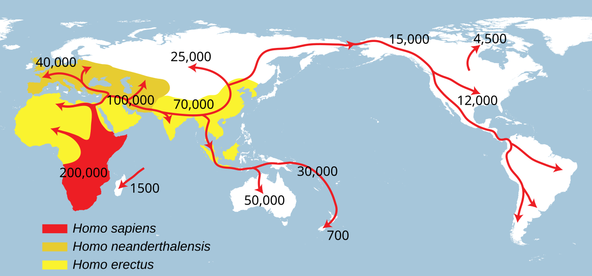

Part A · The biological system · Page 8 of 13
Populations III: ancestry, population structure, and population descriptors
Every genome carries traces of where a person's ancestors lived. In a genotype matrix this shows up as correlated rows: people who share more recent ancestry have more similar genotypes across thousands of SNPs. This page explains where that structure comes from, how it is measured (reference samples, PCA, admixture models), why it can create false associations in a genome-wide association study (GWAS, a test of every SNP for association with a trait), and how to describe people and groups without confusing social categories with genetics.
From geography to confounding
Allele frequencies change gradually with geography, so people who share more recent ancestry have correlated genotypes across thousands of SNPs. Principal component analysis (PCA) of the genotype matrix recovers this structure as a few axes of genetic similarity. If a trait also varies along those axes for non-genetic reasons, a naive association test is confounded; adjusting for the axes removes most of the bias.
- History leaves gradients. Modern humans spread out of Africa through a series of founder events, so genetic diversity is highest in Africa, most variation is shared between populations, and allele frequencies change gradually with distance rather than in steps.
- Name what you measured. Race and ethnicity are social categories. Genetic ancestry is the set of paths in a family tree along which DNA was inherited. What an analysis actually measures is genetic similarity to named reference samples.
- PCA and admixture models summarize the rows of the genotype matrix. Principal components are the top eigenvectors of the \(n \times n\) genetic relationship matrix of \(n\) people; admixture models estimate ancestry proportions for a chosen number of components \(K\). Both describe this sample relative to these references, not fixed human groups.
- Population stratification is confounding. Ancestry affects genotypes and can affect traits, so SNPs that do nothing look associated. QQ plots and the inflation factor \(\lambda\) detect it; principal components as covariates, mixed models and within-family designs control it.
- Who is studied matters. Most GWAS participants are classed as "European" by the catalogs that track GWAS (88.4% of discovery-stage participants in 2026), so variants that are common elsewhere are missed and polygenic scores work less well in other groups.
Human population history in brief Core
Modern humans (Homo sapiens) evolved in Africa. The oldest fossils usually assigned to our species come from Jebel Irhoud in Morocco and are about 315,000 years old.1 Genomes of present-day people show that all populations outside Africa derive most of their ancestry from an expansion out of Africa about 50,000–60,000 years ago.2 Whether there were one or several dispersals is still debated, and published estimates of their timing range from about 50,000 to 100,000 years ago.3 The expansion reached Australia by about 50,000 years ago and the Americas by about 15,000 years ago.3

Serial founder effects. Each step of this spread was made by a group of people who left an existing population and founded a new one. A founder group carries only part of the variation of the population it came from (a founder effect; see Populations I). When this repeats many times along a migration route, it is called a serial founder effect: genetic diversity is highest in Africa and falls with distance from Africa. Across 53 populations, a population's heterozygosity (the probability that two copies of a locus drawn at random from the population carry different alleles) fell in a straight line with the distance from East Africa along land routes; distance explained 76% of its variation (\(R^2 = 0.76\)).4
Most variation is shared. All humans descend from the same recent African population, so most alleles occur on several continents, and most genetic variation is found between individuals within a population rather than between populations. In a classic 1972 analysis, 85.4% of genetic variation was within populations, 8.3% between populations within the continental "races" then used for grouping, and 6.3% between those groups.6,7 A 2002 study of 1,056 people from 52 populations found 93–95% of variation within populations and 3–5% between major geographic groups.8
The standard summary of how far apart populations are is \(F_{\mathrm{ST}}\) (the fixation index): the fraction of genetic variation that lies between populations rather than within them. One common definition compares pairs of allele copies at a locus:
- \(H_{\mathrm{within}}\)
- Heterozygosity within a population, as defined above: the probability that two allele copies drawn at random from the same population carry different alleles, averaged over the populations compared.
- \(H_{\mathrm{between}}\)
- The probability that two allele copies carry different alleles when one is drawn from each of two populations.
- \(F_{\mathrm{ST}}\)
- Fixation index of the populations at this locus, from 0 to 1. A genome-wide value combines many SNPs.
Drawing the two copies from different populations adds the differences between the populations to the differences within them, so \(H_{\mathrm{between}} \ge H_{\mathrm{within}}\) and the ratio \(H_{\mathrm{within}}/H_{\mathrm{between}}\) lies between 0 and 1. If the populations have identical allele frequencies, it does not matter which population the second copy comes from: \(H_{\mathrm{within}} = H_{\mathrm{between}}\) and \(F_{\mathrm{ST}} = 0\). If they are fixed for different alleles, two copies from the same population never differ and two copies from different populations always do: \(H_{\mathrm{within}} = 0\), \(H_{\mathrm{between}} = 1\) and \(F_{\mathrm{ST}} = 1\). In between, \(F_{\mathrm{ST}}\) grows with the squared difference between the populations' allele frequencies, as the next paragraph shows.
Take one SNP and two populations in which an allele has frequencies \(p_1\) and \(p_2\). Two copies drawn from population 1 differ with probability \(2p_1(1 - p_1)\), and likewise for population 2, so \(H_{\mathrm{within}} = p_1(1 - p_1) + p_2(1 - p_2)\), the average of the two. One copy from each population differs with probability \(H_{\mathrm{between}} = p_1(1 - p_2) + p_2(1 - p_1)\). The difference \(H_{\mathrm{between}} - H_{\mathrm{within}}\) works out to \((p_1 - p_2)^2\), so \(F_{\mathrm{ST}} = (p_1 - p_2)^2/H_{\mathrm{between}}\). In the table below, the lactase-persistence allele of rs4988235 has frequency 0.51 in EUR and 0 in EAS, which gives \(F_{\mathrm{ST}} = 0.51^2/0.51 = 0.51\) at that SNP; the MTHFR allele of rs1801133 (0.36 in EUR, 0.30 in EAS) gives \(F_{\mathrm{ST}} = 0.06^2/0.444 = 0.008\). Typical genome-wide values for human populations are small: about 0.004 between the HapMap samples from Utah residents of northern and western European ancestry (CEU) and from Tuscany (TSI),9 and 0.106 between European and East Asian and 0.139 between European and West African samples of the 1000 Genomes Project.10
Gradients, not boxes. Because people have mostly had children with partners from nearby, allele frequencies usually change gradually across geography. A gradual change of allele frequency along a geographic axis is called a cline. Genetic differences between populations increase steadily with geographic distance, with small jumps across major barriers such as oceans and mountain ranges.11 A few variants differ sharply between regions, mostly because of natural selection; the running examples below are of that kind. Most SNPs differ only a little, as the next sections show.
| Variant (allele) · gene · what the allele does | AFR | AMR | EAS | EUR | SAS |
|---|---|---|---|---|---|
| rs2814778 (C)ACKR1 · Duffy-null, resistance to P. vivax malaria | 0.96 | 0.08 | 0 | 0.006 | 0 |
| rs671 (A)ALDH2 · ALDH2*2, alcohol flushing | 0.002 | 0.003 | 0.17 | 0 | 0 |
| rs4988235 (A)MCM6/LCT · lactase persistence | 0.03 | 0.22 | 0 | 0.51 | 0.11 |
| rs334 (A)HBB · HbS, sickle cell | 0.10 | 0.007 | 0 | 0 | 0 |
| rs1801133 (A)MTHFR · 677T, heat-sensitive enzyme | 0.09 | 0.47 | 0.30 | 0.36 | 0.12 |
| rs11591147 (T)PCSK9 · R46L, lower LDL cholesterol | 0 | 0.016 | 0 | 0.021 | 0 |
Admixture is common. When people from populations that had been separated for many generations have children together, their descendants carry chromosome segments inherited from each source population. This is admixture, and people or populations with such recent mixed origins are called admixed. It has happened repeatedly throughout human history.3 For example, among 5,269 self-described African Americans who used a genetic-testing service, the estimated ancestry proportions averaged 73.2% African, 24.0% European and 0.8% Native American, relative to reference samples from those regions.13 Individuals vary around such averages, so a group label says little about any one person's genome.
Words matter: population descriptors Core
A population descriptor is a concept or classification scheme used to sort people into groups, such as race, ethnicity, geography or genetic similarity.14 Genetics papers need such labels to describe who was studied, but each label carries assumptions, and some have a long history of misuse. In 2023 a committee of the US National Academies of Sciences, Engineering, and Medicine (NASEM) reviewed how genetics uses these labels and made 13 recommendations.14 Their definitions are the ones used on this site:
| Descriptor | What it is | How it is obtained | Example |
|---|---|---|---|
| Race | "A sociopolitically constructed system for classifying and ranking human beings according to subjective beliefs about shared ancestry based on perceived innate biological similarities"; "the system varies globally". | Self-identification, or assignment by others | US census race categories |
| Ethnicity | A sociopolitically constructed system for classifying people "according to claims of shared heritage often based on perceived cultural similarities (e.g., language, religion, beliefs)". | Self-identification | UK Biobank field 21000, "Ethnic background" |
| Geography | Where a person, or their parents or grandparents, were born or lived. | Questionnaire | Country of birth; grandparents' countries of birth |
| Genealogical ancestry | All the people in a person's family tree: parents, grandparents, great-grandparents and so on. | Records, family history | 8 great-grandparents |
| Genetic ancestry | "The paths through an individual's family tree by which they have inherited DNA from specific ancestors." Only some genealogical ancestors are genetic ancestors. | Never observed directly; inferred from genetic similarity | Estimated ancestry proportions |
| Genetic similarity | A "quantitative measure of the genetic resemblance between individuals that reflects the extent of shared genetic ancestry". | Computed from genotypes (PCs, distances, admixture proportions) | "Genetically similar to the 1000 Genomes GBR samples on the first 10 PCs" |
Four NASEM recommendations matter most for analysts:14
- Do not use race as a proxy for genetic variation (recommendation 1), and do not assign genetic ancestry labels on the basis of race.
- Avoid typological thinking (recommendation 2): the assumption that humans fall into a few distinct, internally uniform, ranked and unchanging groups.
- Choose descriptors to fit the question, and explain how and why they were used (recommendations 6 and 8), including how group labels were assigned. For genetic results the report recommends referring explicitly to genetic similarity, for example "most genetically similar by measure X to the GBR panel of the 1000 Genomes data set", rather than the shorthand "genetic ancestry".
- Mind the connotations of terms (recommendation 3). The report's example: "Caucasian" should not be used, because it was coined to convey white supremacy.
Graham Coop and the authors of a 2022 Science article (Lewis et al.) make the same argument from population genetics: ancestry is continuous, groups are defined by sampling choices, and a statement such as "genetically similar to the 1000 Genomes GBR samples (on the first 10 PCs)" says exactly what was measured, whereas "has Northwestern European genetic ancestry" does not.15,16
Why the care. In the 18th century Johann Friedrich Blumenbach named Europeans "Caucasian" because he judged the most beautiful skull in his collection to come from the Caucasus region and took it as a symbol of a superior race.14 The English statistician Francis Galton coined the word eugenics in 1883 and defined it as the study of "agencies under social control that may improve or impair the racial qualities of future generations".17 Eugenic laws in the United States led to the involuntary sterilization of at least 60,000 people in 30 states by the 1970s, and Nazi Germany forcibly sterilized at least 400,000 people and killed at least 70,000 adults and 5,200 children it deemed "unworthy of life".17 Discredited ideas from that era are still revived today, sometimes citing genetic studies (slides 40–42).
Reference samples: HapMap, 1000 Genomes, HGDP Core
Genetic similarity is always measured relative to someone. Reference samples are people from documented sampling sites whose genotypes or genomes are public, so that any study can compare its participants with them. Three collections are used most:
| Collection | Who was sampled | Typical use |
|---|---|---|
| International HapMap Project (phase I 2005; phase 3 2010) | Phase I: 269 people from four sampling sites: 90 Yoruba in Ibadan, Nigeria (YRI) and 90 Utah residents with northern and western European ancestry (CEU), each as 30 parent–child trios, plus 45 Han Chinese in Beijing (CHB) and 44 Japanese in Tokyo (JPT).18 Phase 3: 1,184 people from 11 populations.9 | First genome-wide maps of LD; the labels CEU, YRI, CHB and JPT appear on many older slides (for example slides 92 and 95–96). |
| 1000 Genomes Project (phase 3 2015; high-coverage 2022) | 2,504 people from 26 populations in five super-populations: AFR (661 people), AMR (347), EAS (504), EUR (503), SAS (489).5 In 2022 the samples, together with 698 relatives, were resequenced at 30× coverage (3,202 genomes including 602 trios).19 | The standard reference for PCA, ancestry estimation, LD and imputation; used in the Session 1 practical. |
| Human Genome Diversity Project (HGDP-CEPH panel) | Cell lines from about 1,050 people in 52 populations worldwide;20 929 of them have high-coverage genomes (2020).21 | Finer coverage of world populations; combined with 1000 Genomes as the reference for Pan-UKBB (below). |
The five 1000 Genomes super-populations are AFR (African), AMR (samples from the Americas, mostly of mixed ancestry), EAS (East Asian), EUR (European) and SAS (South Asian). Three facts about these labels matter in practice:
- Labels describe how samples were collected, usually a place and a self-identified group (for example GBR: "British in England and Scotland"), not genetic boundaries.22 The five super-populations are a sampling design, not a natural partition of humanity.
- Some labels are imprecise. The Pan-UKBB authors call AMR "an imprecise label introduced by the 1kGP to describe individuals with recent admixture from multiple continents including Amerindigenous ancestry".23
- Gaps exist. None of the 26 populations of 1000 Genomes was sampled in the Middle East or Oceania,22 so people with ancestry from those regions have no close reference there; HGDP fills some of these gaps.
The 26 populations of 1000 Genomes phase 3 (codes you will see in plots)
| Super-population | Populations (code: description, \(n\)) |
|---|---|
| AFR (661) | ACB: African Caribbean in Barbados, 96 · ASW: African Ancestry in Southwest US, 61 · ESN: Esan in Nigeria, 99 · GWD: Gambian in Western Division, The Gambia (Mandinka), 113 · LWK: Luhya in Webuye, Kenya, 99 · MSL: Mende in Sierra Leone, 85 · YRI: Yoruba in Ibadan, Nigeria, 108 |
| AMR (347) | CLM: Colombian in Medellín, Colombia, 94 · MXL: Mexican Ancestry in Los Angeles, California, 64 · PEL: Peruvian in Lima, Peru, 85 · PUR: Puerto Rican in Puerto Rico, 104 |
| EAS (504) | CDX: Chinese Dai in Xishuangbanna, China, 93 · CHB: Han Chinese in Beijing, China, 103 · CHS: Southern Han Chinese, 105 · JPT: Japanese in Tokyo, Japan, 104 · KHV: Kinh in Ho Chi Minh City, Vietnam, 99 |
| EUR (503) | CEU: Utah residents (CEPH) with Northern and Western European ancestry, 99 · FIN: Finnish in Finland, 99 · GBR: British in England and Scotland, 91 · IBS: Iberian populations in Spain, 107 · TSI: Toscani in Italy, 107 |
| SAS (489) | BEB: Bengali in Bangladesh, 86 · GIH: Gujarati Indians in Houston, Texas, 103 · ITU: Indian Telugu in the UK, 102 · PJL: Punjabi in Lahore, Pakistan, 96 · STU: Sri Lankan Tamil in the UK, 102 |
Measuring genetic similarity with principal component analysis Core
Why thousands of SNPs. At a single SNP, two groups with slightly different allele frequencies overlap almost completely. Combining thousands of SNPs separates them, because the small differences are consistent: a person from group 1 tends to carry slightly more copies of the alleles that are more common in group 1 at every one of those SNPs. With many thousands of loci, people from geographically separated populations are essentially always genetically more similar to members of their own population than to members of the other.24
The algorithm. Principal component analysis (PCA) finds the directions of largest variance in a data matrix. Applied to genotypes it works on the rows (people):
- Start from the genotype matrix \(\mathbf{G}\) (\(n\) people by \(m\) SNPs, entries 0, 1, 2). Keep common SNPs and LD-prune them, so that no two retained SNPs are strongly correlated; otherwise a few long LD regions can dominate the top components.25
- Standardize each column (each SNP) to mean 0 and variance about 1. Call the result \(\mathbf{Z}\).
- Form the genetic relationship matrix (GRM) \(\mathbf{K}\), an \(n \times n\) matrix with one entry for each pair of people.
- Take the top eigenvectors of \(\mathbf{K}\). Each one holds a score for every person: their value on one principal component (PC1, PC2, …).
- Plot PC1 against PC2 (and further pairs). Each dot is a person; nearby dots are genetically similar people.
In symbols, steps 2–4 are
- \(g_{ij}\)
- Genotype of person \(i\) (\(i = 1, \ldots, n\)) at SNP \(j\) (\(j = 1, \ldots, m\)): the number of copies of the counted allele, 0, 1 or 2. These are the entries of \(\mathbf{G}\).
- \(\hat{p}_j\)
- Frequency of the counted allele at SNP \(j\) in the sample: the mean of column \(j\) of \(\mathbf{G}\), divided by 2.
- \(z_{ij}\)
- Standardized genotype of person \(i\) at SNP \(j\).
- \(\mathbf{Z}\)
- The \(n \times m\) matrix of the \(z_{ij}\); \(\mathbf{Z}^{\top}\) is its transpose.
- \(m\)
- Number of SNPs kept after filtering and LD pruning.
- \(\mathbf{K}\)
- Genetic relationship matrix, \(n \times n\). Its entry for persons \(i\) and \(i'\) is \(K_{ii'} = \tfrac{1}{m}\sum_j z_{ij} z_{i'j}\), the average over SNPs of the product of their standardized genotypes: positive when the two share more alleles than expected from the sample frequencies, negative when they share fewer.
- \(\mathbf{u}_k\)
- The \(k\)-th eigenvector of \(\mathbf{K}\), of length 1: a vector of \(n\) scores, one per person, giving their values on principal component \(k\) (PC \(k\)). Equivalently, \(\mathbf{u}_k\) is the \(k\)-th left singular vector of \(\mathbf{Z}\).
- \(\ell_k\)
- The \(k\)-th largest eigenvalue of \(\mathbf{K}\). The share of the genotype variance explained by PC \(k\) is \(\ell_k/\operatorname{trace}(\mathbf{K})\).
Under Hardy–Weinberg equilibrium a genotype at SNP \(j\) is \(\Binomial(2, p_j)\), where \(p_j\) is the frequency of the counted allele in the population, so its mean is \(2p_j\) and its variance \(2p_j(1 - p_j)\). Standardizing with the sample frequency \(\hat{p}_j\) in place of \(p_j\) therefore gives every column mean 0 and variance about 1, so rare and common SNPs count on the same scale; without this step, common SNPs, whose genotypes vary most, would dominate \(\mathbf{K}\). A product \(z_{ij} z_{i'j}\) is positive when persons \(i\) and \(i'\) both carry more, or both carry fewer, copies than the sample average at SNP \(j\). For two unrelated people from one homogeneous population these deviations are independent with mean 0, so the products cancel over many SNPs and \(K_{ii'}\) is close to 0, while \(K_{ii}\), an average of squares, is close to 1. People who share more recent ancestry deviate in the same direction at many SNPs, so their small products add up. The top eigenvectors of \(\mathbf{K}\) pick out such sets of people (next paragraph).
In detail, \(\mathbf{u}_1\) maximizes \(\mathbf{u}^{\top} \mathbf{K} \mathbf{u} = \tfrac{1}{m}\sum_j \bigl(\sum_i u_i z_{ij}\bigr)^2\) over all score vectors \(\mathbf{u}\) of length 1, and the maximum is \(\ell_1\). The inner sum is large when people with positive scores carry more copies than average at SNP \(j\) and people with negative scores carry fewer, or the reverse, so \(\mathbf{u}_1\) gives opposite signs to sets of people whose genotypes deviate in opposite directions at many SNPs at once. Each later \(\mathbf{u}_k\) does the same among vectors orthogonal to the earlier ones. The eigenvalues add up to \(\operatorname{trace}(\mathbf{K}) = \tfrac{1}{m}\sum_{i,j} z_{ij}^2\), the total variance of the standardized genotypes (about \(n\)), which is why \(\ell_k/\operatorname{trace}(\mathbf{K})\) is the share of the variance explained by PC \(k\).
At biobank scale. Forming \(\mathbf{K}\) needs \(n^2\) entries, which is impractical for hundreds of thousands of people, so software computes the top PCs with randomized or iterative methods that only multiply by \(\mathbf{Z}\), such as FastPCA,26 or PLINK 2's approximate mode, which its documentation calls "a good idea" above 5,000 samples and "almost required" above 50,000.25 UK Biobank computed PCs from 407,219 unrelated participants and then projected everyone else onto them (multiplying their standardized genotypes by the SNP weights of each PC).27 The widget further down uses the simplest method: power iteration on \(\mathbf{K}\) for 150–600 simulated people.
How subtle a difference can PCA detect? For two populations of equal size, Patterson and colleagues showed a sharp threshold: structure becomes detectable once \(1/F_{\mathrm{ST}}\) is smaller than \(\sqrt{nm}\), the square root of the number of people \(n\) times the number of SNPs \(m\).28 Squaring both sides, the condition is \(nm F_{\mathrm{ST}}^2 > 1\), so the smallest detectable \(F_{\mathrm{ST}}\) falls with the square root of \(nm\): 100 times more SNPs detect a difference 10 times smaller. With 1,000 people and 100,000 SNPs, \(\sqrt{nm} = 10{,}000\) and the threshold is \(F_{\mathrm{ST}} = 0.0001\), far below the \(F_{\mathrm{ST}}\) of about 0.004 between two European populations. Large genotype data sets therefore reveal very fine structure.
PCs describe this sample, not humanity. PCs are axes of variation of whoever is in the data. Change who is sampled and the picture changes:
Two real examples appear in Lecture 1. In the famous European PCA of Novembre et al. (2008), PC1 and PC2 of 1,387 people reproduce the map of Europe, and an assignment based on the PCs placed half of the people within 310 km of their reported origin; yet the two PCs explain only 0.30% and 0.15% of the genotype variance, and the authors kept only people whose recorded grandparents all came from the same country, which made the map sharper than the population really is.29 In the figure reproduced by Lewis et al. (2022), 4,149 reference individuals from 87 populations form colored clusters, while 31,705 participants of a New York City biobank (BioMe) fill the space between and around them.16
Model-based estimates: STRUCTURE, ADMIXTURE and GrafAnc Core
STRUCTURE34 and ADMIXTURE35 fit the same statistical model. There are \(K\) ancestral components, each with its own allele frequency at every SNP, and each person has one ancestry proportion per component. Each allele copy the person carries is assumed to come from a component chosen at random with these proportions as probabilities, independently for every copy, so
- \(g_{ij}\)
- Genotype of person \(i\) at SNP \(j\): the number of copies of the counted allele, 0, 1 or 2, as in the PCA section.
- \(K\)
- Number of ancestral components, chosen by the analyst. Here \(K\) is a count, not the relationship matrix \(\mathbf{K}\) of the PCA section.
- \(q_{ik}\)
- Ancestry proportion: the fraction of the allele copies of person \(i\) that the model assigns to component \(k\). For each person, \(q_{i1}, \ldots, q_{iK}\) are non-negative and sum to 1; they form row \(i\) of ADMIXTURE's \(\mathbf{Q}\) matrix. Here \(q\) is an ancestry proportion, not an allele frequency; elsewhere on this site \(q = 1 - p\) is an allele frequency.
- \(f_{kj}\)
- Frequency of the counted allele at SNP \(j\) in component \(k\), between 0 and 1. ADMIXTURE reports these in its \(\mathbf{P}\) matrix.
- \(\sum_{k} q_{ik} f_{kj}\)
- Probability that one allele copy of person \(i\) at SNP \(j\) is the counted allele: the allele frequency the model assigns to that person.
A copy comes from component \(k\) with probability \(q_{ik}\) and then carries the counted allele with probability \(f_{kj}\); adding over the components gives the probability that the copy carries it. The person's two copies are independent draws, so the number of counted alleles is binomial with 2 trials. A person with \(q_{ik} = 1\) for one component is modeled as a member of that component, with genotypes \(\Binomial(2, f_{kj})\); a person with \(q_{i1} = q_{i2} = \tfrac{1}{2}\) has per-copy probability \((f_{1j} + f_{2j})/2\) at every SNP. The likelihood multiplies these binomial probabilities over all people and all SNPs, which treats the SNPs as independent; inputs are therefore usually LD-pruned, as for PCA. The fit always returns the best mixture of \(K\) components, whether or not the people are actually admixed (below).
STRUCTURE explores the posterior distribution by Markov chain Monte Carlo; ADMIXTURE maximizes the likelihood and is much faster. The output is the \(n \times K\) matrix \(\mathbf{Q}\) of ancestry proportions, drawn as a bar plot with one thin bar per person, colored by the proportions. The analyst chooses \(K\), often by comparing several values or by cross-validation. Runs can be unsupervised (components estimated from the data) or supervised (reference samples fixed to their own component). For admixed people, related methods estimate local ancestry: which source population each segment of each chromosome is most similar to.
The lessons from Lawson et al. are that very different histories (recent admixture, admixture with an unsampled population, a recent bottleneck) can produce indistinguishable bar plots, and that the components depend on \(K\) and on which samples are included.36 Read a proportion as "the best fit of this model to these samples", not as a percentage of a person's ancestors.
GRAF-pop and GrafAnc. GRAF-pop was developed at the US National Center for Biotechnology Information (NCBI) for quality control of studies submitted to dbGaP, the NIH database of genotypes and phenotypes. It compares each person's genotypes at a fixed set of 10,000 SNPs with allele frequencies of five reference populations, turns the comparison into genetic-distance scores and estimated proportions of European, African and East Asian ancestry, and assigns one of nine groups, without any PCA.37 GrafAnc, developed at the University of Pennsylvania by GRAF-pop's first author and colleagues, builds on and extends GRAF-pop: it uses 282,424 ancestry-informative SNPs and allele frequencies from 26 reference populations, produces 18 scores per person and classifies people into 8 continental and 38 subcontinental groups, including Middle East and North Africa; the scores do not depend on who else is in the study and can be used as covariates or to assign groups.38 The groups are still statements of genetic similarity to reference populations.
Population stratification and confounding Core
A GWAS tests every SNP for association with a trait, a measured characteristic such as height or LDL cholesterol. For a quantitative trait it fits, one SNP \(j\) at a time, the linear regression
- \(y_i\)
- Trait value of person \(i\).
- \(g_{ij}\)
- Genotype of person \(i\) at the tested SNP \(j\): 0, 1 or 2 copies of the counted allele.
- \(\mathbf{c}_i\)
- Vector of the covariates of person \(i\): the variables adjusted for, such as age, sex and PCs.
- \(\alpha, \boldsymbol{\gamma}\)
- Intercept, and the vector of covariate coefficients.
- \(\beta\)
- Effect of SNP \(j\): the difference in mean trait per additional copy of the counted allele, between people with the same covariate values.
- \(\varepsilon_i\)
- Error: the part of \(y_i\) that the model does not explain, assumed to have mean 0 and to be independent between people.
The GWAS reports, for each SNP, a p-value for \(\beta = 0\), from the statistic \(t = \hat{\beta}/\SE(\hat{\beta})\). Least squares estimates \(\beta\) only from the part of the variation in \(g_{ij}\) that the covariates do not explain. With PCs in \(\mathbf{c}_i\), \(\hat{\beta}\) therefore measures the association between genotype and trait at fixed PC scores, so a difference in mean trait between groups that the PCs separate can no longer appear as a slope. A variable that affects \(y_i\), is correlated with \(g_{ij}\) and is missing from \(\mathbf{c}_i\) biases \(\hat{\beta}\) away from the true effect, even when that effect is 0.
Confounding occurs when a third variable affects both the exposure (here the genotype) and the outcome (the trait), so that they are associated even if the exposure has no effect. Population stratification is confounding by ancestry: in a sample that mixes people of different ancestries, allele frequencies differ with ancestry, and if the trait also differs with ancestry for any other reason (diet, climate, health care, culture, how the trait was measured, or other genetic variants), every SNP whose frequency tracks ancestry becomes associated with the trait.
Detecting it: QQ plots and \(\lambda\). Most SNPs in a GWAS have no effect on the trait, so most test statistics should follow the null distribution. A quantile–quantile (QQ) plot compares the sorted observed −log10 p-values with those expected under the null: points on the diagonal mean no excess of small p-values. The genomic inflation factor summarizes the whole distribution in one number:41
- \(X_j^2\)
- Observed test statistic of SNP \(j\) on the chi-square scale with 1 degree of freedom. For the regression test above, \(X_j^2 = t^2\), the square of the SNP's t statistic.
- \(m\)
- Number of SNPs tested.
- \(0.4549\)
- Median of the chi-square distribution with 1 degree of freedom, \(\chi^2_1\): the value that half of the statistics would exceed if no SNP were associated with the trait.
- \(\lambda\)
- Genomic inflation factor: the observed median as a multiple of the median expected under the null hypothesis.
A \(\chi^2_1\) variable is the square of a standard normal variable, so it is below a value \(c\) when the normal variable lies between \(-\sqrt{c}\) and \(\sqrt{c}\). That has probability 0.5 when \(\sqrt{c} = 0.67449\), the 75th percentile of the standard normal distribution, so the median is \(c = 0.67449^2 = 0.4549\). When no SNP affects the trait and the tests are valid, about half of the statistics fall below 0.4549 and \(\lambda \approx 1\). The median barely moves when a few SNPs with real effects have very large statistics, so \(\lambda\) describes the bulk of the SNPs. If confounding multiplies every statistic by the same factor, the median is multiplied by it too and \(\lambda\) estimates that factor; genomic control (below) divides each statistic by \(\lambda\) for this reason.
Stratification inflates many statistics at once and pushes \(\lambda\) above 1. A trait influenced by many variants (a polygenic trait) studied in a large sample also gives \(\lambda\) above 1 without any confounding, because many SNPs carry real signal;42 a method called LD score regression separates the two sources (Session 5).43
Try it. The widget simulates people under one of two histories (three groups, or a smooth cline across a 5 × 3 map) with 5,000 SNPs, computes PC1 and PC2 from 1,000 of them in your browser (power iteration on the \(n \times n\) relationship matrix), then simulates a trait that no SNP affects (unless you add one) but that differs between groups or regions for environmental reasons. It tests all 5,000 SNPs with linear regression and shows the QQ plot and \(\lambda\). All data are simulated.
What to notice. (1) Set \(F_{\mathrm{ST}}\) to 0: there is no structure, the PCs are noise, and \(\lambda\) stays near 1 whatever the environmental difference. (2) Set the environmental difference to 0: \(\lambda\) stays near 1 even with strong structure. Stratification needs both ingredients: allele frequencies and the trait must differ along the same axis. (3) With both, \(\lambda\) rises well above 1 and dozens of SNPs reach p < 0.001 although none affects the trait. (4) In the three-group history the trait is raised in group C, which PC2 separates from B; adjusting for PC1 alone leaves \(\lambda\) inflated, and PC1 + PC2 brings it back to about 1. In the cline history the trait changes from west to east, along PC1, so PC1 alone is enough. Adjust for the axes along which the trait differs. (5) Tick "add one real causal SNP": it stays at the top of the QQ plot after adjustment, and its p-value usually gets smaller, because the PCs remove confounding, not real effects.
Controlling it. Five approaches, often combined:
- PCs as covariates. Add the top PCs to every SNP regression (the EIGENSTRAT approach).44 This removes confounding along the axes the PCs capture.
- Linear mixed models. Add a random effect whose covariance is proportional to the genetic relationship matrix \(\mathbf{K}\); it absorbs fine-scale structure and relatedness together (Session 2; REGENIE in the practical).
- Genomic control. Divide every chi-square statistic \(X_j^2\) by \(\lambda\).41 Simple, but it shrinks all SNPs equally, including SNPs with real effects.
- Analyze groups separately, then combine. Run the GWAS within each genetic-similarity group and meta-analyze the results; Pan-UKBB found this gave \(\lambda\) closer to 1 than one joint analysis.23
- Within-family designs. Siblings share their parents and therefore their ancestry, so the genotype differences between them are random results of meiosis and cannot be confounded by ancestry. In 178,086 siblings, within-sibship estimates were smaller than population estimates for height, educational attainment and several other traits, while estimates for most molecular traits, such as LDL cholesterol, were consistent; the difference reflects stratification, assortative mating and effects of relatives' genotypes.45
When PCs are not enough Optional
- Subtle stratification adds up across SNPs. Signals of natural selection on height computed from a large consortium GWAS turned out to be inflated by stratification that the original PC adjustment had not removed; with UK Biobank estimates the signals were "strongly attenuated or absent".46,47 Analyses that sum many small effects, such as polygenic scores, are most sensitive.
- Rare variants are structured differently. Rare variants are usually young and geographically local, so they can show stronger and more localized stratification than common variants, which PCs computed from common SNPs do not necessarily correct.48
- Some traits track geography closely. Pan-UKBB flagged traits such as country of birth and dietary preferences as prone to stratification.23 For these, even small residual confounding matters.
Ancestry and descriptors in UK Biobank Core
UK Biobank records two different kinds of descriptor, and they should not be mixed up.
Self-reported ethnic background (field 21000). Participants answered a touchscreen question at the assessment center, built from sequential branching questions: a broad group (White, Mixed, Asian or Asian British, Black or Black British, Chinese, Other ethnic group, or "Do not know" / "Prefer not to answer"), then a subgroup such as British, Irish, Indian, Pakistani, Caribbean or African.49 At baseline, 94.6% of participants aged 40–69 reported a White ethnic background, close to the 94.5% in the 2001 UK census for that age range.50 The question was dropped from the touchscreen on 24 October 2016 and reintroduced in 2023.49
Genetic ethnic grouping (field 22006). Its only value is "Caucasian", an outdated label (see above). The field is neither self-reported ethnicity nor a general ancestry estimate. It marks participants who both self-identified as White British and cluster together in a PCA of the genotypes: Bycroft et al. started from the 431,059 participants who reported "British" within "White" and removed outliers on pairs of PCs (PC1–PC6), leaving 409,728 people (409,206 in the current Showcase).27,51 Restricting to this subset reduces stratification but excludes everyone else.
Genetic principal components (fields 22009 and 22020). 40 PCs per participant, computed with FastPCA on 407,219 unrelated, high-quality participants and 147,604 SNPs, then projected onto all participants; field 22020 flags who was used (406,654 people in the current Showcase).27,31,32
Pan-UKBB genetic-similarity groups. The Pan-UK Biobank project ran GWAS of 7,266 traits in six groups defined by genetic similarity to the HGDP and 1000 Genomes reference samples: participants were projected onto PCs computed in the reference samples, assigned by a random-forest classifier when its probability exceeded 0.5, and outliers were removed.23,52 The labels are reference labels: EUR means "most genetically similar to the HGDP + 1000 Genomes EUR samples" ("HGDP+1kGP-EUR-like", following NASEM), and the authors stress that the groups "do not imply the existence of discrete, biological ancestral populations".23
What restricting to one group costs. Diverse participants "are often excluded from association analyses due to concerns about population structure".23 Including them pays off: the Pan-UKBB meta-analysis found 14,676 significant loci that the EUR group alone did not. One example is a missense variant in G6PD (rs1050828) with allele frequency 16% in the AFR group and 0.015% in EUR, associated in AFR with HbA1c (glycated hemoglobin, a blood test used to diagnose and monitor diabetes) and four red-blood-cell traits.23
Diversity in genetic studies Core
In 2019, Martin et al. reported from the GWAS Catalog that about 79% of all GWAS participants were "of European descent", a group that makes up about 16% of the world's population.53 A later count, made in a different way, gives a similar picture: in October 2026 the GWAS Diversity Monitor put 88.4% of discovery-stage GWAS participants in its "European" category.54
This imbalance has four consequences:
- Variants common elsewhere are missed. rs671 (ALDH2*2) has frequency 0.17 in the 1000 Genomes EAS samples and was not observed in EUR (table above), so a European-only GWAS cannot find it. Two loss-of-function variants in PCSK9 (Y142X and C679X) were found by sequencing 128 people with very low LDL cholesterol, half of them African American; together they are carried by about 2% of African Americans and fewer than 0.1% of European Americans.55 Among 3,363 Black participants of a later prospective study, the 2.6% who carried one had 28% lower LDL cholesterol and 88% lower risk of coronary heart disease.56 This finding "led to one of the first genetically-informed therapies to prevent heart disease".23
- Polygenic scores transfer poorly. A polygenic score adds up a person's alleles weighted by GWAS effect sizes to predict a trait (Session 6). Using GWAS results from samples labeled European, Martin et al. found that prediction accuracy for 17 traits in UK Biobank was on average 1.6-fold lower in the groups they label Hispanic/Latino Americans and South Asians, 2.0-fold lower in East Asians and 4.5-fold lower in Africans than in the European group.53 For height, a score from a GWAS of 5.4 million people explained about 40–45% of the variance in populations the authors describe as "of European ancestry" but about 10–24% in their other groups.57 Allele frequencies and LD differ between populations, so SNPs that tag a causal variant in one population tag it less well in another.
- Fine-mapping improves with diversity. LD extends over shorter distances in samples from African populations, such as the 1000 Genomes AFR samples (Haplotypes and LD), so association peaks are narrower and the causal variant is easier to locate.
- Equity. If genetic findings and tools work best for the groups that dominate discovery samples, so do their clinical benefits; Martin et al. warned that clinical use of current polygenic scores "may exacerbate health disparities".53
Check your understanding
A colleague's methods section says "we restricted to Caucasian participants (field 22006)". What would you change, and why?
"Caucasian" is an outdated label that NASEM recommends against; it was coined within a racial hierarchy. Field 22006 is also not self-reported ethnicity: it marks participants who self-identified as White British and cluster together on genetic PCs. Write, for example, "we restricted to the UK Biobank White British subset (field 22006), defined by self-report and genetic similarity on principal components (Bycroft et al. 2018)".
Two populations differ with \(F_{\mathrm{ST}} = 0.005\). No single SNP tells you who belongs to which, yet PC1 of 50,000 SNPs separates them. How?
Each SNP's frequency difference is tiny, but a person from one population tends to carry slightly more of that population's more common alleles at all of the SNPs at once. PCA adds up these consistent differences; the signal grows with the number of SNPs while the noise averages out. By the Patterson et al. threshold, structure is detectable once \(1/F_{\mathrm{ST}} < \sqrt{nm}\) for \(n\) people and \(m\) SNPs, that is, once \(nm > 1/F_{\mathrm{ST}}^2\). For \(F_{\mathrm{ST}} = 0.005\), \(1/F_{\mathrm{ST}}^2 = 40{,}000\), far below, for example, \(nm = 100 \times 50{,}000 = 5{,}000{,}000\) for 100 people and 50,000 SNPs.
A GWAS of a dietary trait gives \(\lambda = 1.45\) without covariates and 1.03 after adding 10 PCs. What most likely happened? Would you expect \(\lambda = 1.03\) in a GWAS of height in 500,000 people?
The diet differs along the same axes of genetic similarity as allele frequencies (population stratification); the PCs captured those axes and removed most of the inflation. For height in 500,000 people, \(\lambda\) well above 1 is expected even without confounding, because height is highly polygenic and many SNPs carry real signal; LD score regression is used to tell the two apart.
An ADMIXTURE run with \(K = 2\) shows one population as a 50:50 mixture of the other two. Does this prove that it is admixed?
No. A group that is small in the sample or that has drifted little on its own is also fitted as a mixture of the more drifted groups (Lawson et al. 2018), and different histories can give the same bar plot. Look at larger \(K\), at whether the group gets its own component, and at other evidence before concluding admixture.
Why does a within-sibling GWAS protect against population stratification?
Siblings have the same parents and therefore the same ancestry and much of the same environment. Which alleles each sibling received is decided at random during meiosis, so differences in genotype between siblings cannot be correlated with ancestry.
A study runs a GWAS only in the Pan-UKBB EUR group. Name two scientific consequences.
Variants that are common only in other groups go untested or undetected (for example rs1050828 in G6PD, at 16% frequency in AFR and 0.015% in EUR), and polygenic scores built from the results will predict less accurately in people from other groups. Fine-mapping also loses the resolution that groups with shorter LD would add.
Learn more
- NHGRI Talking Glossary: Genetic Ancestry · genome.gov intro — a careful short definition, with related entries for local ancestry and race.
- Eugenics and Scientific Racism · NHGRI fact sheet intro — the history behind slides 39–42, with sources.
- Getting genetic ancestry right for science and society · Lewis et al., Science 2022 (free via PMC) intro — why continental labels mislead, with the BioMe PCA figure.
- Using Population Descriptors in Genetics and Genomics Research · NASEM 2023, free to read online intermediate — the report behind this page's language; Chapter 5 gives practical guidance.
- Genetic similarity versus genetic ancestry groups as sample descriptors · Coop, arXiv intermediate — the argument for "genetically similar to …", by a population geneticist.
- 1000 Genomes / IGSR population list · EMBL-EBI intro — every reference population code with its sampling description.
- Interpreting principal component analyses of spatial population genetic variation · Novembre & Stephens, Nat Genet 2008 (free via PMC) advanced — why PCA of continuous structure produces arcs and waves.
- New approaches to population stratification in genome-wide association studies · Price et al., Nat Rev Genet 2010 (free via PMC) intermediate — PCs, mixed models and family designs compared.
- A tutorial on how not to over-interpret STRUCTURE and ADMIXTURE bar plots · Lawson et al., Nat Commun 2018 intermediate — simulated histories that give identical bar plots.
- Pan-UK Biobank · Broad Institute advanced — multi-ancestry GWAS of UK Biobank, with documentation of how the six groups were defined.
Sources for this page
- Hublin J-J, Ben-Ncer A, Bailey SE, et al. (2017). New fossils from Jebel Irhoud, Morocco and the pan-African origin of Homo sapiens. Nature 546:289–292. doi:10.1038/nature22336
- Bergström A, Stringer C, Hajdinjak M, Scerri EML, Skoglund P (2021). Origins of modern human ancestry. Nature 590:229–237. doi:10.1038/s41586-021-03244-5
- Nielsen R, Akey JM, Jakobsson M, Pritchard JK, Tishkoff S, Willerslev E (2017). Tracing the peopling of the world through genomics. Nature 541:302–310. doi:10.1038/nature21347
- Ramachandran S, Deshpande O, Roseman CC, Rosenberg NA, Feldman MW, Cavalli-Sforza LL (2005). Support from the relationship of genetic and geographic distance in human populations for a serial founder effect originating in Africa. PNAS 102:15942–15947. doi:10.1073/pnas.0507611102 · free full text (PMC1276087)
- The 1000 Genomes Project Consortium (Auton A, et al.) (2015). A global reference for human genetic variation. Nature 526:68–74. doi:10.1038/nature15393 (Table 1: median variant sites per genome; sample sizes per super-population.)
- Lewontin RC (1972). The apportionment of human diversity. Evolutionary Biology 6:381–398. doi:10.1007/978-1-4684-9063-3_14
- Edge MD, Ramachandran S, Rosenberg NA (2022). Celebrating 50 years since Lewontin's apportionment of human diversity. Phil Trans R Soc B 377:20200405. doi:10.1098/rstb.2020.0405 · free full text (PMC9014183) (source of the 85.4% / 8.3% / 6.3% values quoted here.)
- Rosenberg NA, Pritchard JK, Weber JL, Cann HM, Kidd KK, Zhivotovsky LA, Feldman MW (2002). Genetic structure of human populations. Science 298:2381–2385. doi:10.1126/science.1078311 · PubMed 12493913
- The International HapMap 3 Consortium (2010). Integrating common and rare genetic variation in diverse human populations. Nature 467:52–58. doi:10.1038/nature09298
- Bhatia G, Patterson N, Sankararaman S, Price AL (2013). Estimating and interpreting \(F_{\mathrm{ST}}\): the impact of rare variants. Genome Res 23:1514–1521. doi:10.1101/gr.154831.113 · free full text (PMC3759727)
- Rosenberg NA, Mahajan S, Ramachandran S, Zhao C, Pritchard JK, Feldman MW (2005). Clines, clusters, and the effect of study design on the inference of human population structure. PLoS Genet 1:e70. doi:10.1371/journal.pgen.0010070
- 1000 Genomes phase 3 super-population allele frequencies as served by Ensembl release 116 (compiled for this lecture; see the Ensembl population-genetics page for rs671 and the equivalent pages for the other variants).
- Bryc K, Durand EY, Macpherson JM, Reich D, Mountain JL (2015). The genetic ancestry of African Americans, Latinos, and European Americans across the United States. Am J Hum Genet 96:37–53. doi:10.1016/j.ajhg.2014.11.010
- National Academies of Sciences, Engineering, and Medicine (2023). Using Population Descriptors in Genetics and Genomics Research: A New Framework for an Evolving Field. Washington, DC: The National Academies Press. doi:10.17226/26902 (definitions in Box S-1; recommendations 1–13; best practices in Chapter 5.)
- Coop G (2022, revised 2023). Genetic similarity versus genetic ancestry groups as sample descriptors in human genetics. arXiv:2207.11595. arxiv.org/abs/2207.11595
- Lewis ACF, Molina SJ, Appelbaum PS, et al. (2022). Getting genetic ancestry right for science and society. Science 376:250–252. doi:10.1126/science.abm7530 · free full text (PMC10135340)
- National Human Genome Research Institute. Eugenics and Scientific Racism (fact sheet, updated May 18, 2022). genome.gov
- The International HapMap Consortium (2005). A haplotype map of the human genome. Nature 437:1299–1320. doi:10.1038/nature04226
- Byrska-Bishop M, Evani US, Zhao X, et al. (2022). High-coverage whole-genome sequencing of the expanded 1000 Genomes Project cohort including 602 trios. Cell 185:3426–3440.e19. doi:10.1016/j.cell.2022.08.004
- Fondation Jean Dausset-CEPH. HGDP-CEPH Human Genome Diversity Cell Line Panel (1,063 cell lines from 1,050 individuals in 52 populations). cephb.fr
- Bergström A, McCarthy SA, Hui R, et al. (2020). Insights into human genetic variation and population history from 929 diverse genomes. Science 367:eaay5012. doi:10.1126/science.aay5012 · free full text (PMC7115999)
- International Genome Sample Resource (IGSR). 1000 Genomes population descriptions and phase 3 sample panel (integrated_call_samples_v3.20130502.ALL.panel). internationalgenome.org
- Karczewski KJ, Gupta R, Kanai M, et al. (2025). Pan-UK Biobank genome-wide association analyses enhance discovery and resolution of ancestry-enriched effects. Nat Genet 57:2408–2417. doi:10.1038/s41588-025-02335-7
- Witherspoon DJ, Wooding S, Rogers AR, Marchani EE, Watkins WS, Batzer MA, Jorde LB (2007). Genetic similarities within and between human populations. Genetics 176:351–359. doi:10.1534/genetics.106.067355 · free full text (PMC1893020)
- PLINK 2.0 documentation: Population stratification (
--pca; default 10 PCs, LD-pruning advice, approximate mode for large samples). cog-genomics.org/plink/2.0/strat - Galinsky KJ, Bhatia G, Loh P-R, et al. (2016). Fast principal-component analysis reveals convergent evolution of ADH1B in Europe and East Asia. Am J Hum Genet 98:456–472. doi:10.1016/j.ajhg.2015.12.022
- Bycroft C, Freeman C, Petkova D, et al. (2018). The UK Biobank resource with deep phenotyping and genomic data. Nature 562:203–209. doi:10.1038/s41586-018-0579-z
- Patterson N, Price AL, Reich D (2006). Population structure and eigenanalysis. PLoS Genet 2:e190. doi:10.1371/journal.pgen.0020190
- Novembre J, Johnson T, Bryc K, et al. (2008). Genes mirror geography within Europe. Nature 456:98–101. doi:10.1038/nature07331
- PLINK 1.9 documentation: Population stratification (
--pca, default 20 PCs) and file formats (.eigenvec,.eigenval). cog-genomics.org/plink/1.9/strat; cog-genomics.org/plink/1.9/formats - UK Biobank Data Showcase. Data-Field 22009: Genetic principal components. biobank.ndph.ox.ac.uk
- UK Biobank Data Showcase. Data-Field 22020: Used in genetic principal components. biobank.ndph.ox.ac.uk
- DCEG Statistical Genetics Workshop, Session 1 practical (QC of the PennCATH data: steps 5 and 6 on PCA with 1000 Genomes reference samples and GrafAnc). dceg-workshops.github.io
- Pritchard JK, Stephens M, Donnelly P (2000). Inference of population structure using multilocus genotype data. Genetics 155:945–959. doi:10.1093/genetics/155.2.945 · free full text (PMC1461096)
- Alexander DH, Novembre J, Lange K (2009). Fast model-based estimation of ancestry in unrelated individuals. Genome Res 19:1655–1664. doi:10.1101/gr.094052.109 · free full text (PMC2752134)
- Lawson DJ, van Dorp L, Falush D (2018). A tutorial on how not to over-interpret STRUCTURE and ADMIXTURE bar plots. Nat Commun 9:3258. doi:10.1038/s41467-018-05257-7
- Jin Y, Schäffer AA, Feolo M, Holmes JB, Kattman BL (2019). GRAF-pop: a fast distance-based method to infer subject ancestry from multiple genotype datasets without principal components analysis. G3 9:2447–2461. doi:10.1534/g3.118.200925 · free full text (PMC6686921)
- Jin Y, Wang H, Naj AC, Wang L-S, Lee W-P (2026). GrafAnc: reliable and reproducible inference of continental and regional population structure. HGG Advances 7:100530. doi:10.1016/j.xhgg.2025.100530
- Campbell CD, Ogburn EL, Lunetta KL, et al. (2005). Demonstrating stratification in a European American population. Nat Genet 37:868–872. doi:10.1038/ng1607
- Epstein MP, Allen AS, Satten GA (2007). A simple and improved correction for population stratification in case-control studies. Am J Hum Genet 80:921–930. doi:10.1086/516842 (re-analysis of the Campbell et al. data; source of the two P-values quoted and of the sample size, 1,057 short and 1,132 tall participants.)
- Devlin B, Roeder K (1999). Genomic control for association studies. Biometrics 55:997–1004. doi:10.1111/j.0006-341x.1999.00997.x · PubMed 11315092
- Yang J, Weedon MN, Purcell S, et al. (2011). Genomic inflation factors under polygenic inheritance. Eur J Hum Genet 19:807–812. doi:10.1038/ejhg.2011.39
- Bulik-Sullivan BK, Loh P-R, Finucane HK, et al. (2015). LD Score regression distinguishes confounding from polygenicity in genome-wide association studies. Nat Genet 47:291–295. doi:10.1038/ng.3211
- Price AL, Patterson NJ, Plenge RM, Weinblatt ME, Shadick NA, Reich D (2006). Principal components analysis corrects for stratification in genome-wide association studies. Nat Genet 38:904–909. doi:10.1038/ng1847
- Howe LJ, Nivard MG, Morris TT, et al. (2022). Within-sibship genome-wide association analyses decrease bias in estimates of direct genetic effects. Nat Genet 54:581–592. doi:10.1038/s41588-022-01062-7
- Berg JJ, Harpak A, Sinnott-Armstrong N, et al. (2019). Reduced signal for polygenic adaptation of height in UK Biobank. eLife 8:e39725. doi:10.7554/eLife.39725 · free full text (PMC6428572)
- Sohail M, Maier RM, Ganna A, et al. (2019). Polygenic adaptation on height is overestimated due to uncorrected stratification in genome-wide association studies. eLife 8:e39702. doi:10.7554/eLife.39702 · free full text (PMC6428571)
- Mathieson I, McVean G (2012). Differential confounding of rare and common variants in spatially structured populations. Nat Genet 44:243–246. doi:10.1038/ng.1074
- UK Biobank Data Showcase. Data-Field 21000: Ethnic background (coding 1001; notes on the 2016 removal and 2023 reintroduction of the question). biobank.ndph.ox.ac.uk
- Fry A, Littlejohns TJ, Sudlow C, et al. (2017). Comparison of sociodemographic and health-related characteristics of UK Biobank participants with those of the general population. Am J Epidemiol 186:1026–1034. doi:10.1093/aje/kwx246 · free full text (PMC5860371) (Table 1.)
- UK Biobank Data Showcase. Data-Field 22006: Genetic ethnic grouping (coding 1002). biobank.ndph.ox.ac.uk
- Pan-UK Biobank team. Technical overview (group definitions and sample sizes). pan.ukbb.broadinstitute.org
- Martin AR, Kanai M, Kamatani Y, Okada Y, Neale BM, Daly MJ (2019). Clinical use of current polygenic risk scores may exacerbate health disparities. Nat Genet 51:584–591. doi:10.1038/s41588-019-0379-x. Fold values from the published article (the earlier author manuscript, PMC6563838, gives 1.6, 1.7, 2.5 and 4.9).
- GWAS Diversity Monitor (participants at the discovery stage; data last checked 2026-10-06). gwasdiversitymonitor.com; cited as Mills MC, Rahal C (2020). The GWAS Diversity Monitor tracks diversity by disease in real time. Nat Genet 52:242–243. doi:10.1038/s41588-020-0580-y
- Cohen J, Pertsemlidis A, Kotowski IK, Graham R, Garcia CK, Hobbs HH (2005). Low LDL cholesterol in individuals of African descent resulting from frequent nonsense mutations in PCSK9. Nat Genet 37:161–165. doi:10.1038/ng1509
- Cohen JC, Boerwinkle E, Mosley TH Jr, Hobbs HH (2006). Sequence variations in PCSK9, low LDL, and protection against coronary heart disease. N Engl J Med 354:1264–1272. doi:10.1056/NEJMoa054013 · PubMed 16554528
- Yengo L, Vedantam S, Marouli E, et al. (2022). A saturated map of common genetic variants associated with human height. Nature 610:704–712. doi:10.1038/s41586-022-05275-y